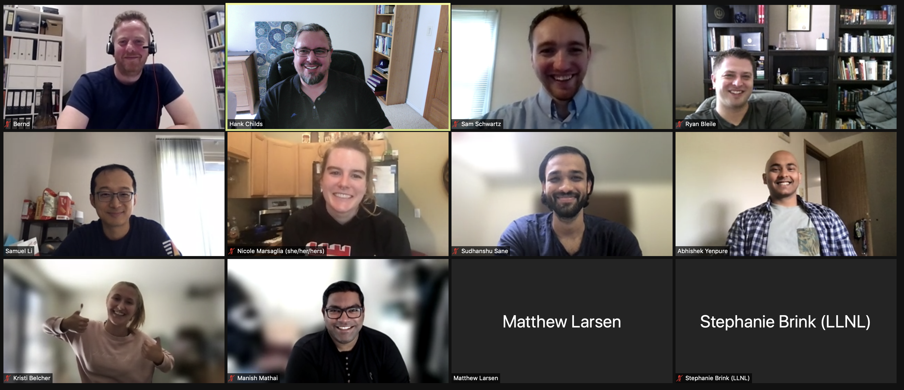
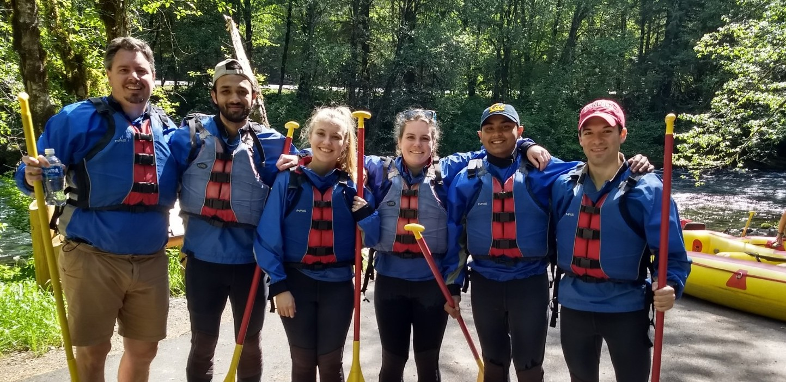
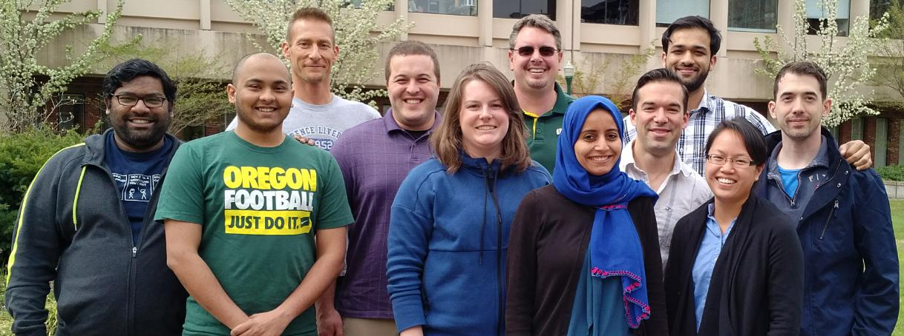
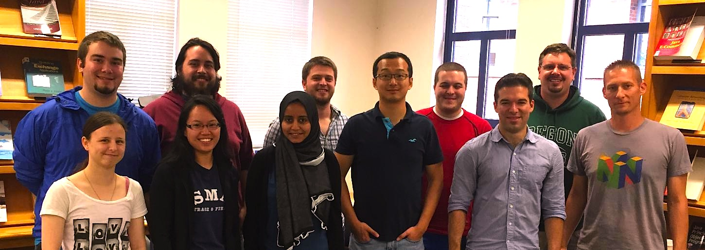
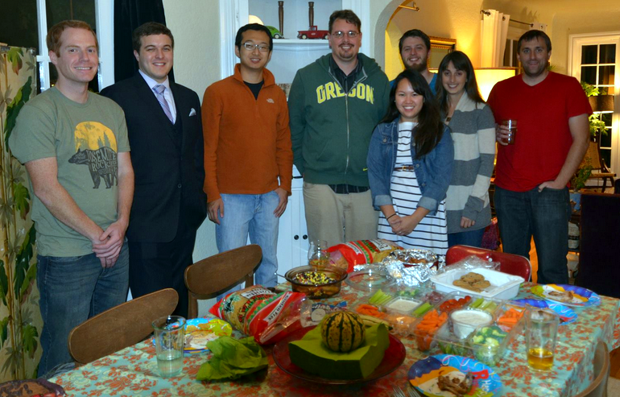

Join UsThe research group on Computing and Data Understanding at eXtreme scale (CDUX) conducts an active and well-funded research program specializing in the areas of scientific visualization, high-performance computing, scientific computing, and computer graphics, as well as problems at their intersection. CDUX Ph.D. students have a strong track record of success. Our 8 Ph.D. graduates have averaged more than five first-authored papers at peer-reviewed venues during their studies, including 7 papers that have been recognized with awards. Further, our students are performing impactful research, including works that open up new research directions, deployment in real-world settings, and frequent citations. Our students have traveled extensively to present their research results, including trips to Canada, China, Czechia, Germany, Ireland, Italy, the Netherlands, Portugal, and Spain, as well as throughout the United States. Finally, many of our alumni have pursued positions that allow them to continue their research after they graduate. The profiles in the Ph.D. Alumni section of this page contain more details about each alum, including publications, a copy of their dissertation, a link to their Google Scholar page (if one exists), and post-graduation employment information. We are always looking for talented people to work with us. Incoming graduate students often have three considerations: reaching their potential, using the process as a springboard for a great career, and having fun doing it. We believe we can offer all three at the University of Oregon. More specifics about advising can be found here. If you are interested in joining the group, email Hank Childs at hank@uoregon.edu. Below are a few group photos from over the years. We are a social group, getting together for food, to celebrate successes, and sometimes for bigger excursions.
Zoom lunch during COVID lockdown
 Rafting trip, Spring 2018 VTK-m All Hands Meeting, Spring 2017 Research Meeting, Spring 2015 Birthday Party, Fall 2013 |